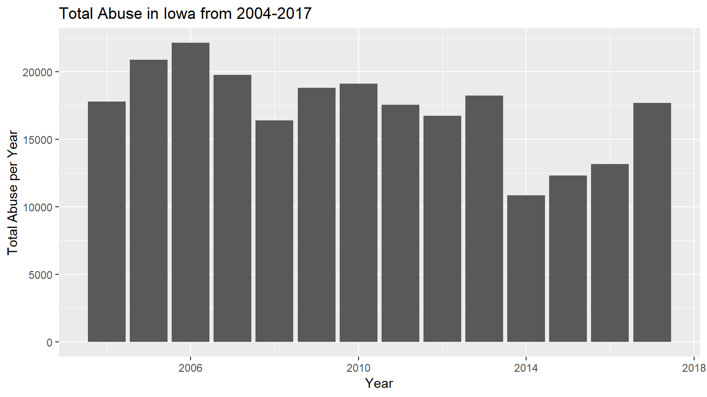

We eliminated Denial of Critical care from our observations and created an interactive map to show the second most prevalent types of abuse in each county. We also used a dataset with Iowa county population and joined it together with the Abuse dataset. The representation above shows the results with color of each circle showing the types of abuse and the radius showing average occurrence according to population. Hovering over each point shows us what county each type of abuse occurs in with the pop up being the county name.
Below is a representation of how total abuse has varied from 2004-2017. It has peaked in 2017 because Dangerous Substance abuse only started being recorded in 2017. Iowa passed a law in 2017 that legalised medical marijuana use and while it is only offered to registered patients, this could be a cause of the increase in Dangerous Substance abuse and Presence of Illegal Drugs in child’s system might.

Given the above information, we recommended the following policy changes for the State of Iowa: Increase education on child abuse; Increase the quality of service area 2. Increase the number of service areas as some of them encompass too many counties. Issue new laws that prevents underage children from obtaining dangerous substances. (This could mean raising legal drinking age) * ## Conclusion To date the financial cost of child abuse in the United States is a approximately $585 billion and we believe that millions could be saved afterwards by implementing the above policy changes today that would not cost this much.